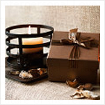

Gift Ideas
1. Chocolates:
In any form, in any shape, in
any taste. This conventional, age old, yet so unique and so new gift is
considered V-Day certified gift by lovers all across the world. Chocolates are
divine, decadent and are closely associated with love and romance. It arouses
sensuousness and is one of the main causes of the adrenalin rush. Hence the
moment you gift a bunch of chocolates to your sweetie on the special day,
his/her mood will be set and you will be having a cozy and amorous time
together.
2. Flowers:
If by the term, a bouquet with
red/pink roses is coming to your mind, then try to think out of the box. Apart
from that fresh natural beauty, you can think of paper roses or plastic ones, as
an epitome of everlasting love. Sounds quirky? Well, romantic as well. If your
partner feels so, tell him/her those golden words: "I will love you till the
roses die". Hence he/she will understand the depth of your emotions and will
accept it with a smile. Don't forget to spray some perfume on it for an aromatic
effect.
3. Perfume:
That can a wonderful
option for your stylish and fashion conscious partner, don't forget to know
her/his choice of fragrance before you hit the store. Tell him/her that the
liquid might finish off, but the aroma will last long, just like your love. If
she deeply loves you, ask her next year and confirm-she will be keeping the
bottle, as a symbol of your feelings. Will not this be a return gift for you-
What say!
4. Gift Box:
Off course full of gifts-mind
you! You can show how much you love your honey by making this handmade gift
especially for him/her. Show your creative side and decorate the wooden/metal
box purchased from outside with colorful sand papers, or crepe papers. Bring
colorful paints and draw hearts and kisses to give a romantic look to the entire
box. Fill it with chocolates, candies, cup cakes, candles and lots and lots of
love in form of notes and poems inside it.
5. Spa gift vouchers:

Very trendy, as well as
romantic. If possible buy two such vouchers together so that you can spend some
quality time with each other. Pamper yourselves through the masseur and get
rejuvenated with scented oils and lotions. Relax your mind with your partner, as
you two get lost in conversations for those lovely hours.
6. A String of Love Notes :
This may take some time to set up, especially coordinating how they are delivered, but this romance-as-scavenger-hunt is the kind of sweet touch everybody enjoys. Depending on how involved you want to get, you can involve your loved one's friends and family in the process, allowing them to get in on the fun. You might start with a short message of fond appreciation, and then work through two or three more loving thoughts before ending with a reservation for your favorite dinner spot.